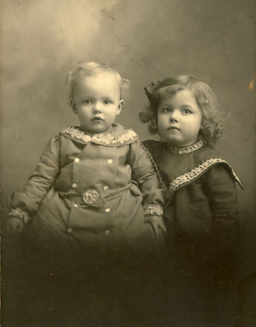

Grace Lucille Wogsland
1900 - ?
Grace Lucille Wogsland was born July 26th, 1900 to Florence and Andrew Wogsland. She married Eugene Howard and together they had two children.

Grace with her younger brother
Cliff
in 1903
Parents:
Florence Olive Zingg
1874 - 1966
Gustavus Andreas Wogsland
1863 - 1924
Offspring:
Jean Howard
1921 - ?
Jack Howard
1924 - ?
References:
1. Raymond Allan Wogsland
2. Becky Cox
Last Modified: 12 October 2009 by
Brad Wogsland
.